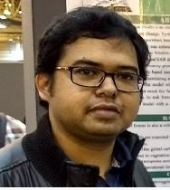
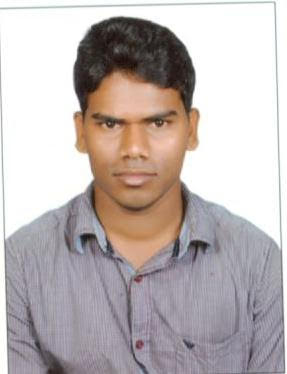

Spatial Analysis and Modelling Laboratory
Centre for Oceans, Rivers,Atmosphere, and Land Sciences (CORAL)
IIT Kharagpur, India
- Home
- About
- Contact
- Lab Group
- News
- Research
- Projects
- Field Sites
- Opportunities
- Field Photos
- Data
- Publications
- Education
- CL60028
- CL60019
- CL69005
- Weblinks
- Journals
Current Personnel

Mr. Sujit M Ghosh
Ph.D. scholar;CORAL
sujitmghosh@iitkgp.ac.in
Research Area:
Above ground biomass estimation
SAR remote sensing
Machine learning
 Mr. Somnath Paramanik
Mr. Somnath Paramanik
Ph.D. scholar
somnathpu06@gmail.com
Research Area:
Hyperspectral Remote Sensing
Crop disease identification
Crop growth stages discrimination
Chlorophyll concentration estimation and Biodiversity
assessment in Bhitarkanika and Sunderbans Mangrove Forests
 Mr. Raj Kumar Singh
Mr. Raj Kumar Singh
Ph.D. scholar;CORAL
rksingh.gis@gmail.com
Research Area:
Automatic Feature Extraction of Crop Fields using high resolution Satellite Data
Roma Nimmy Varghese
Ph.D. scholar;CORAL
romavarghese17@gmail.com
Research Area:
Remote Sensing and Modelling
Surbhi Barnwal
Ph.D. scholar;CORAL
barnwalsurbhi5@gmail.com
Research Area:
Leaf Chlorophyll Characterisation using Satellite Remote Sensing

B Jagadish
Ph.D. scholar;CORAL
jagadishjsu@gmail.com
Research Area:
Carbon Studies using Satellite Data
Ambadipudi Jaya Prakash
Ph.D. scholar;CORAL
jpcivil103@gmail.com
Research Area:
Soil and Vegetation Carbon Assesment
Above ground biomass estimation
SAR remote sensing
Machine learning
 Veera Sri Naga Sai
Veera Sri Naga Sai
Ph.D. scholar;CORAL
nagasai.veera@gmail.com
Research Area:
Dynamic Vegetation Model